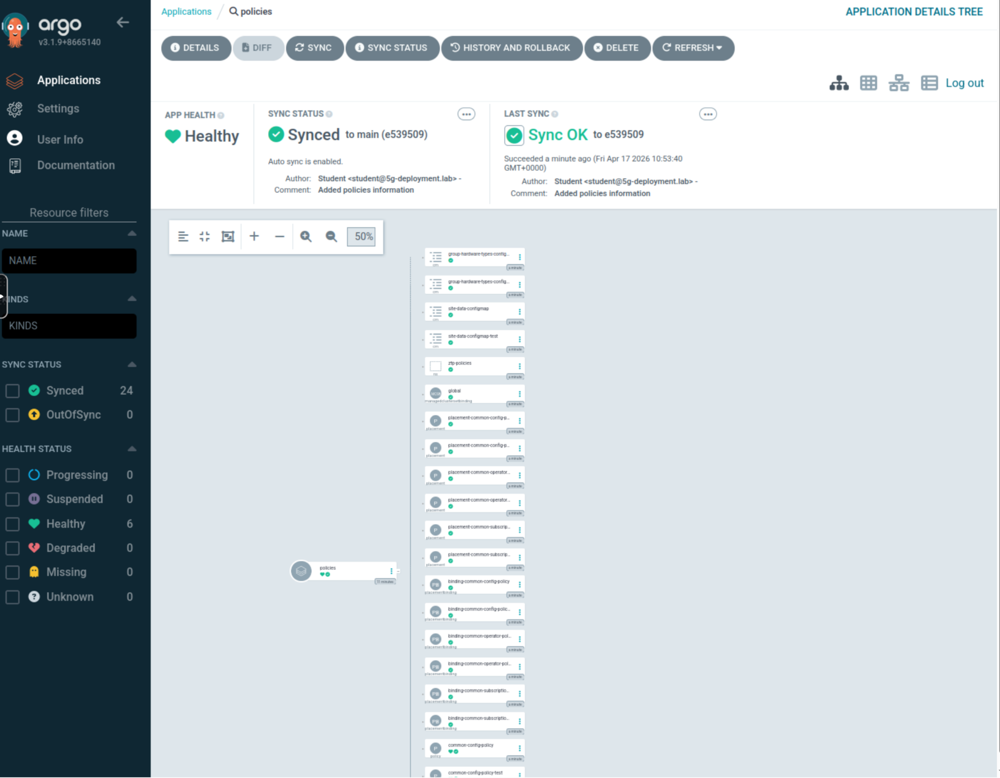
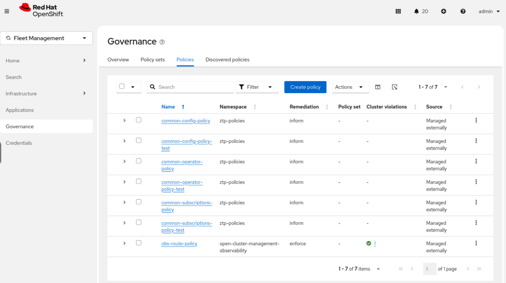

Crafting the Telco Core Reference Design Specification
In the previous section, the ZTP GitOps pipeline was put in place to deploy our Infrastructure as Code (IaC) and Configuration as Code (CaC). Here, we are going to focus on creating the Configuration as Code (CaC) for the OpenShift cluster that will be installed in the following sections. The configuration of the Telco Core Reference Design Specification is applied using multiple PolicyGenerator objects.
The PolicyGenerator object is the cornerstone for defining Configuration as Code (CaC) within this ZTP pipeline, enabling scalable and consistent configuration of OpenShift clusters. We described how PolicyGenerator works in detail here, so let’s jump directly to the creation of the different policies.
| The configuration defined through these PolicyGenerator CRs is only a subset of what was described in Introduction to Telco Related Infrastructure Operators. This is for clarity and tailored to the lab environment. A full production environment for supporting telco 5G Core workloads would have additional configuration not included here, but described in detail as the v4.18 Telco Core Reference Design Specification in the official documentation. |
| Below commands must be executed from the infrastructure host if not specified otherwise. |
Crafting Common Policies
The common policies apply to every cluster in our infrastructure that matches our binding rule. They are designed for universal configurations that apply to a broad set of clusters sharing an OpenShift release. This reinforces the efficiency gains of managing a large fleet. They are often used to configure things like CatalogSources, operator deployments, etc. that are common to all our clusters.
These configs may vary from release to release, that’s why we create a common-418.yaml file. We will likely have a common configuration profile for each release we deploy.
| The PolicyGenerator object utilizes binding rules defined by labels (e.g., common: "ocp419" and logicalGroup: "active") that are pre-set within the ClusterInstance definition, ensuring that these common configurations are automatically applied to the designated clusters across your fleet. |
-
Create the
commonPolicyGenerator for v4.18 OpenShift Cluster:cat <<EOF > ~/5g-deployment-lab/ztp-repository/site-policies/fleet/active/v4.18/common-418.yaml --- apiVersion: policy.open-cluster-management.io/v1 kind: PolicyGenerator metadata: name: common placementBindingDefaults: name: common-placement-binding policyDefaults: namespace: ztp-policies placement: labelSelector: common: "ocp418" logicalGroup: "active" remediationAction: inform severity: low namespaceSelector: exclude: - kube-* include: - '*' evaluationInterval: compliant: 10m noncompliant: 10s policies: - name: common-config-policy policyAnnotations: ran.openshift.io/ztp-deploy-wave: "1" manifests: - path: source-crs/reference-crs/required/other/operator-hub.yaml - path: source-crs/reference-crs/required/other/catalog-source.yaml patches: - metadata: name: redhat-operators-disconnected spec: image: infra.5g-deployment.lab:8443/redhat/redhat-operator-index:v4.18-1771330977 - path: source-crs/reference-crs/required/performance/PerformanceProfile.yaml patches: - metadata: name: performance-rds-core spec: cpu: isolated: '{{hub fromConfigMap "" "group-hardware-types-configmap" (printf "%s-cpu-isolated" (index .ManagedClusterLabels "hardware-type")) hub}}' reserved: '{{hub fromConfigMap "" "group-hardware-types-configmap" (printf "%s-cpu-reserved" (index .ManagedClusterLabels "hardware-type")) hub}}' hugepages: defaultHugepagesSize: '{{hub fromConfigMap "" "group-hardware-types-configmap" (printf "%s-hugepages-default" (index .ManagedClusterLabels "hardware-type"))| hub}}' pages: - count: '{{hub fromConfigMap "" "group-hardware-types-configmap" (printf "%s-hugepages-count" (index .ManagedClusterLabels "hardware-type")) | toInt hub}}' size: '{{hub fromConfigMap "" "group-hardware-types-configmap" (printf "%s-hugepages-size" (index .ManagedClusterLabels "hardware-type")) hub}}' machineConfigPoolSelector: pools.operator.machineconfiguration.openshift.io/worker: "" nodeSelector: node-role.kubernetes.io/worker: '' - name: common-subscriptions-policy policyAnnotations: ran.openshift.io/ztp-deploy-wave: "2" manifests: # NMState operator - path: source-crs/reference-crs/required/networking/NMStateNS.yaml - path: source-crs/reference-crs/required/networking/NMStateOperGroup.yaml - path: source-crs/reference-crs/required/networking/NMStateSubscription.yaml patches: - spec: installPlanApproval: Automatic # SRIOV operator - path: source-crs/reference-crs/required/networking/sriov/SriovSubscriptionNS.yaml - path: source-crs/reference-crs/required/networking/sriov/SriovSubscription.yaml patches: - spec: channel: stable config: env: - name: "DEV_MODE" value: "TRUE" installPlanApproval: Automatic - path: source-crs/reference-crs/required/networking/sriov/SriovSubscriptionOperGroup.yaml # Metallb operator - path: source-crs/reference-crs/required/networking/metallb/metallbNS.yaml - path: source-crs/reference-crs/required/networking/metallb/metallbOperGroup.yaml - path: source-crs/reference-crs/required/networking/metallb/metallbSubscription.yaml patches: - spec: installPlanApproval: Automatic # NUMA resource operator - path: source-crs/reference-crs/required/scheduling/NROPSubscriptionNS.yaml - path: source-crs/reference-crs/required/scheduling/NROPSubscriptionOperGroup.yaml - path: source-crs/reference-crs/required/scheduling/NROPSubscription.yaml # Storage operator - path: source-crs/reference-crs/required/storage/odf-external/odfNS.yaml - path: source-crs/reference-crs/required/storage/odf-external/odfOperGroup.yaml - path: source-crs/reference-crs/required/storage/odf-external/odfSubscription.yaml patches: - spec: installPlanApproval: Automatic # Cluster Logging - path: source-crs/reference-crs/optional/logging/ClusterLogNS.yaml - path: source-crs/reference-crs/optional/logging/ClusterLogSubscription.yaml patches: - spec: installPlanApproval: Automatic channel: stable-6.4 - path: source-crs/reference-crs/optional/logging/ClusterLogOperGroup.yaml - path: source-crs/reference-crs/optional/logging/ClusterLogOperatorStatus.yaml - name: common-operator-policy policyAnnotations: ran.openshift.io/ztp-deploy-wave: "3" manifests: # NMState operator - path: source-crs/reference-crs/required/networking/NMState.yaml # - path: source-crs/reference-crs/required/networking/Network.yaml # SRIOV operator - path: source-crs/reference-crs/required/networking/sriov/SriovOperatorConfig.yaml #- path: source-crs/reference-crs/required/networking/sriov/sriovNetwork.yaml #- path: source-crs/reference-crs/required/networking/sriov/sriovNetworkNodePolicy.yaml # Metallb operator - path: source-crs/reference-crs/required/networking/metallb/metallb.yaml #- path: source-crs/reference-crs/required/networking/metallb/addr-pool.yaml #- path: source-crs/reference-crs/required/networking/metallb/bfd-profile.yaml #- path: source-crs/reference-crs/required/networking/metallb/bgp-advr.yaml #- path: source-crs/reference-crs/required/networking/metallb/bgp-peer.yaml #- path: source-crs/reference-crs/required/networking/metallb/community.yaml #- path: source-crs/reference-crs/required/networking/metallb/service.yaml # NUMA resource operator - path: source-crs/reference-crs/required/scheduling/nrop.yaml - path: source-crs/reference-crs/required/scheduling/sched.yaml # Storage operator - path: source-crs/reference-crs/required/storage/odf-external/01-rook-ceph-external-cluster-details.secret.yaml patches: - data: external_cluster_details: $(cat ~/external-ceph-config.json | base64 -w 0) - path: source-crs/reference-crs/required/storage/odf-external/02-ocs-external-storagecluster.yaml # Cluster Logging - path: source-crs/reference-crs/optional/logging/ClusterLogServiceAccount.yaml - path: source-crs/reference-crs/optional/logging/ClusterLogServiceAccountAuditBinding.yaml - path: source-crs/reference-crs/optional/logging/ClusterLogServiceAccountInfrastructureBinding.yaml EOFBy leveraging hub site templating we are reducing the number of policies on our hub cluster. This makes the clusters’s deployment and maintenance process simpler. Notice that with large fleets of clusters, it can quickly become hard to maintain per-site configurations. -
We’re using policy templating, so we need to create a
ConfigMapwith the templating values to be used. Notice that the following resource contains values for multiple hardware specifications that we may have in our infrastructure. In the policy we just applied, the values are obtained depending on the labelhardware-typethat each cluster is assigned to. This label is set in theClusterInstancedefinition. More information about Template processing can be found in Red Hat Advanced Cluster Management documentation.cat <<EOF > ~/5g-deployment-lab/ztp-repository/site-policies/fleet/active/v4.18/group-hardware-types-configmap.yaml --- apiVersion: v1 kind: ConfigMap metadata: name: group-hardware-types-configmap namespace: ztp-policies annotations: argocd.argoproj.io/sync-options: Replace=true data: hw-type-platform-1-cpu-isolated: "4-11" hw-type-platform-1-cpu-reserved: "0-3" hw-type-platform-1-hugepages-default: "1G" hw-type-platform-1-hugepages-count: "4" hw-type-platform-1-hugepages-size: "1G" hw-type-platform-1-supported-sriov-nic: "false" hw-type-platform-1-storage-path: "/dev/vdb" hw-type-platform-2-cpu-isolated: "2-39,42-79" hw-type-platform-2-cpu-reserved: "0-1,40-41" hw-type-platform-2-hugepages-default: "256M" hw-type-platform-2-hugepages-count: "16" hw-type-platform-2-hugepages-size: "1G" hw-type-platform-2-supported-sriov-nic: "true" hw-type-platform-2-storage-path: "/dev/nvme0n1" EOF cat <<EOF > ~/5g-deployment-lab/ztp-repository/site-policies/fleet/active/v4.18/site-data-hw-1-configmap.yaml --- apiVersion: v1 kind: ConfigMap metadata: name: site-data-configmap namespace: ztp-policies annotations: argocd.argoproj.io/sync-options: Replace=true data: # SR-IOV configuration mno-sriovnic1: "enp4s0" mno-sriovnic2: "enp5s0" mno-resourcename1: "virt-enp4s0" mno-resourcename2: "virt-enp5s0" EOF
More information about Template processing can be found in Red Hat Advanced Cluster Management documentation.
Adding Custom Content (source-crs)
If you require cluster configuration changes outside of the base GitOps Zero Touch Provisioning (ZTP) pipeline configuration, you can add content to the GitOps ZTP library. The base source custom resources (CRs) that are included in the ztp-generate container that you deploy with the GitOps ZTP pipeline can be augmented with custom content as required. So, this is a way to extend the base ZTP library and shows the flexibility of the ZTP pipeline.
| We recommend a directory structure to keep reference manifests corresponding to the y-stream release. |
Notice that we can add content not included in the ZTP container image by creating the required source CR in the source-crs/custom-crs folder. This separation ensures clean upgrades of the base content while preserving custom additions. Once pushed to our Git repo, we can reference it in any of the common, group or site PolicyGenerators. More information on deploying additional changes to cluster can be found in the docs.
Crafting Testing Policies
Rigorous testing of policies in a dedicated, isolated environment is an essential practice to ensure stability, validate functionality, and prevent unintended consequences before deploying to production. In order to do that we will create a set of testing policies (which usually will be very similar to the production ones) and these policies will target clusters labeled with logicalGroup: "testing". We won’t go over every file, the files that will be created are the same as in active, also known as production, but with different names and binding policies. Testing policies are intentionally structured to mirror production policies but are explicitly bound to clusters in a "testing" logical group. This enables isolated validation without impacting active deployments.
This structure demonstrates a strategy for testing policies for an upcoming OpenShift release (v4.21) against dedicated testing clusters before promoting them to the current (v4.18) production fleet, ensuring future compatibility.
-
Create the
commontesting PolicyGenerator for v4.18 OpenShift Cluster:cat <<EOF > ~/5g-deployment-lab/ztp-repository/site-policies/fleet/testing/v4.18/common-418.yaml --- apiVersion: policy.open-cluster-management.io/v1 kind: PolicyGenerator metadata: name: common-test placementBindingDefaults: name: common-placement-binding policyDefaults: namespace: ztp-policies placement: labelSelector: common: "ocp418" logicalGroup: "testing" remediationAction: inform severity: low namespaceSelector: exclude: - kube-* include: - '*' evaluationInterval: compliant: 10m noncompliant: 10s policies: - name: common-config-policy-test policyAnnotations: ran.openshift.io/ztp-deploy-wave: "1" manifests: - path: source-crs/reference-crs/required/other/operator-hub.yaml - path: source-crs/reference-crs/required/other/catalog-source.yaml patches: - metadata: name: redhat-operators-disconnected spec: image: infra.5g-deployment.lab:8443/redhat/redhat-operator-index:v4.18-1771330977 - path: source-crs/reference-crs/required/performance/PerformanceProfile.yaml patches: - metadata: name: performance-rds-core spec: cpu: isolated: '{{hub fromConfigMap "" "group-hardware-types-configmap" (printf "%s-cpu-isolated" (index .ManagedClusterLabels "hardware-type")) hub}}' reserved: '{{hub fromConfigMap "" "group-hardware-types-configmap" (printf "%s-cpu-reserved" (index .ManagedClusterLabels "hardware-type")) hub}}' hugepages: defaultHugepagesSize: '{{hub fromConfigMap "" "group-hardware-types-configmap" (printf "%s-hugepages-default" (index .ManagedClusterLabels "hardware-type"))| hub}}' pages: - count: '{{hub fromConfigMap "" "group-hardware-types-configmap" (printf "%s-hugepages-count" (index .ManagedClusterLabels "hardware-type")) | toInt hub}}' size: '{{hub fromConfigMap "" "group-hardware-types-configmap" (printf "%s-hugepages-size" (index .ManagedClusterLabels "hardware-type")) hub}}' machineConfigPoolSelector: pools.operator.machineconfiguration.openshift.io/worker: "" nodeSelector: node-role.kubernetes.io/worker: '' - name: common-subscriptions-policy-test policyAnnotations: ran.openshift.io/ztp-deploy-wave: "2" manifests: # NMState operator - path: source-crs/reference-crs/required/networking/NMStateNS.yaml - path: source-crs/reference-crs/required/networking/NMStateOperGroup.yaml - path: source-crs/reference-crs/required/networking/NMStateSubscription.yaml patches: - spec: installPlanApproval: Automatic # SRIOV operator - path: source-crs/reference-crs/required/networking/sriov/SriovSubscriptionNS.yaml - path: source-crs/reference-crs/required/networking/sriov/SriovSubscription.yaml patches: - spec: channel: stable config: env: - name: "DEV_MODE" value: "TRUE" installPlanApproval: Automatic - path: source-crs/reference-crs/required/networking/sriov/SriovSubscriptionOperGroup.yaml # Metallb operator - path: source-crs/reference-crs/required/networking/metallb/metallbNS.yaml - path: source-crs/reference-crs/required/networking/metallb/metallbOperGroup.yaml - path: source-crs/reference-crs/required/networking/metallb/metallbSubscription.yaml patches: - spec: installPlanApproval: Automatic # NUMA resource operator - path: source-crs/reference-crs/required/scheduling/NROPSubscriptionNS.yaml - path: source-crs/reference-crs/required/scheduling/NROPSubscriptionOperGroup.yaml - path: source-crs/reference-crs/required/scheduling/NROPSubscription.yaml # Storage operator - path: source-crs/reference-crs/required/storage/odf-external/odfNS.yaml - path: source-crs/reference-crs/required/storage/odf-external/odfOperGroup.yaml - path: source-crs/reference-crs/required/storage/odf-external/odfSubscription.yaml patches: - spec: installPlanApproval: Automatic # Cluster Logging - path: source-crs/reference-crs/optional/logging/ClusterLogNS.yaml - path: source-crs/reference-crs/optional/logging/ClusterLogSubscription.yaml patches: - spec: installPlanApproval: Automatic channel: stable-6.4 - path: source-crs/reference-crs/optional/logging/ClusterLogOperGroup.yaml - path: source-crs/reference-crs/optional/logging/ClusterLogOperatorStatus.yaml - name: common-operator-policy-test policyAnnotations: ran.openshift.io/ztp-deploy-wave: "3" manifests: # NMState operator - path: source-crs/reference-crs/required/networking/NMState.yaml # - path: source-crs/reference-crs/required/networking/Network.yaml # SRIOV operator - path: source-crs/reference-crs/required/networking/sriov/SriovOperatorConfig.yaml #- path: source-crs/reference-crs/required/networking/sriov/sriovNetwork.yaml #- path: source-crs/reference-crs/required/networking/sriov/sriovNetworkNodePolicy.yaml # Metallb operator - path: source-crs/reference-crs/required/networking/metallb/metallb.yaml #- path: source-crs/reference-crs/required/networking/metallb/addr-pool.yaml #- path: source-crs/reference-crs/required/networking/metallb/bfd-profile.yaml #- path: source-crs/reference-crs/required/networking/metallb/bgp-advr.yaml #- path: source-crs/reference-crs/required/networking/metallb/bgp-peer.yaml #- path: source-crs/reference-crs/required/networking/metallb/community.yaml #- path: source-crs/reference-crs/required/networking/metallb/service.yaml # NUMA resource operator - path: source-crs/reference-crs/required/scheduling/nrop.yaml - path: source-crs/reference-crs/required/scheduling/sched.yaml # Storage operator - path: source-crs/reference-crs/required/storage/odf-external/01-rook-ceph-external-cluster-details.secret.yaml - path: source-crs/reference-crs/required/storage/odf-external/02-ocs-external-storagecluster.yaml # Cluster Logging - path: source-crs/reference-crs/optional/logging/ClusterLogServiceAccount.yaml - path: source-crs/reference-crs/optional/logging/ClusterLogServiceAccountAuditBinding.yaml - path: source-crs/reference-crs/optional/logging/ClusterLogServiceAccountInfrastructureBinding.yaml EOF cat <<EOF > ~/5g-deployment-lab/ztp-repository/site-policies/fleet/testing/v4.18/group-hardware-types-configmap-test.yaml apiVersion: v1 kind: ConfigMap metadata: name: group-hardware-types-configmap-test namespace: ztp-policies annotations: argocd.argoproj.io/sync-options: Replace=true data: hw-type-platform-1-cpu-isolated: "4-11" hw-type-platform-1-cpu-reserved: "0-3" hw-type-platform-1-hugepages-default: "1G" hw-type-platform-1-hugepages-count: "4" hw-type-platform-1-hugepages-size: "1G" hw-type-platform-1-supported-sriov-nic: "false" hw-type-platform-1-storage-path: "/dev/vdb" hw-type-platform-2-cpu-isolated: "2-39,42-79" hw-type-platform-2-cpu-reserved: "0-1,40-41" hw-type-platform-2-hugepages-default: "256M" hw-type-platform-2-hugepages-count: "16" hw-type-platform-2-hugepages-size: "1G" hw-type-platform-2-supported-sriov-nic: "true" hw-type-platform-2-storage-path: "/dev/nvme0n1" EOF cat <<EOF > ~/5g-deployment-lab/ztp-repository/site-policies/fleet/testing/v4.18/site-data-hw-1-configmap-test.yaml --- apiVersion: v1 kind: ConfigMap metadata: name: site-data-configmap-test namespace: ztp-policies annotations: argocd.argoproj.io/sync-options: Replace=true data: # SR-IOV configuration mno-sriovnic1: "enp4s0" mno-sriovnic2: "enp5s0" mno-resourcename1: "virt-enp4s0" mno-resourcename2: "virt-enp5s0" EOF
Extract the ZTP source-crs library to the active and testing environments.
podman login infra.5g-deployment.lab:8443 -u admin -p r3dh4t1! --tls-verify=false
podman run --log-driver=none --rm --tls-verify=false infra.5g-deployment.lab:8443/openshift4/openshift-telco-core-rds-rhel9:v4.18.5-5 | base64 -d | tar x -C ~/5g-deployment-lab/ztp-repository/site-policies/fleet/active/v4.18/source-crs/reference-crs/ --strip-components=3 telco-core-rds/configuration/reference-crs/
podman run --log-driver=none --rm --tls-verify=false infra.5g-deployment.lab:8443/openshift4/openshift-telco-core-rds-rhel9:v4.18.5-5 | base64 -d | tar x -C ~/5g-deployment-lab/ztp-repository/site-policies/fleet/testing/v4.18/source-crs/reference-crs/ --strip-components=3 telco-core-rds/configuration/reference-crs/At this point, policies are the same as in production (active). In the future, you prior want to apply these groups of testing policies for the clusters running in your test environment before promoting changes to production (active) completing the GitOps lifecycle.
Configure Kustomization for Policies
We need to create the required kustomization files as we did for SiteConfigs. They will enable the structured management of policies across different logical groups and OpenShift versions, allowing for modular and scalable policy application.
In this case, policies also require a namespace where they will be created. Therefore, we will create the required namespace and the kustomization files.
-
Policies need to live in a namespace, let’s add it to the repo:
cat <<EOF > ~/5g-deployment-lab/ztp-repository/site-policies/policies-namespace.yaml --- apiVersion: v1 kind: Namespace metadata: name: ztp-policies labels: name: ztp-policies EOF -
A managedclusterbinding is required
cat <<EOF > ~/5g-deployment-lab/ztp-repository/site-policies/managedclusterbinding.yaml --- apiVersion: cluster.open-cluster-management.io/v1beta2 kind: ManagedClusterSetBinding metadata: name: global namespace: ztp-policies spec: clusterSet: global EOF -
Create the required Kustomization files
cat <<EOF > ~/5g-deployment-lab/ztp-repository/site-policies/kustomization.yaml --- apiVersion: kustomize.config.k8s.io/v1beta1 kind: Kustomization resources: - fleet/ - policies-namespace.yaml - managedclusterbinding.yaml EOF cat <<EOF > ~/5g-deployment-lab/ztp-repository/site-policies/fleet/kustomization.yaml --- apiVersion: kustomize.config.k8s.io/v1beta1 kind: Kustomization resources: - active/ - testing/ EOF cat <<EOF > ~/5g-deployment-lab/ztp-repository/site-policies/fleet/active/kustomization.yaml --- apiVersion: kustomize.config.k8s.io/v1beta1 kind: Kustomization resources: - v4.18/ EOF cat <<EOF > ~/5g-deployment-lab/ztp-repository/site-policies/fleet/active/v4.18/kustomization.yaml --- apiVersion: kustomize.config.k8s.io/v1beta1 kind: Kustomization generators: - common-418.yaml resources: - group-hardware-types-configmap.yaml - site-data-hw-1-configmap.yaml EOF cat <<EOF > ~/5g-deployment-lab/ztp-repository/site-policies/fleet/testing/kustomization.yaml --- apiVersion: kustomize.config.k8s.io/v1beta1 kind: Kustomization resources: - v4.18/ EOF cat <<EOF > ~/5g-deployment-lab/ztp-repository/site-policies/fleet/testing/v4.18/kustomization.yaml --- apiVersion: kustomize.config.k8s.io/v1beta1 kind: Kustomization generators: - common-418.yaml resources: - group-hardware-types-configmap-test.yaml - site-data-hw-1-configmap-test.yaml EOF -
At this point, we can commit and push the changes to the Git repo:
cd ~/5g-deployment-lab/ztp-repository git add --all git commit -m 'Added policies information' git push origin main cd ~
Deploying the Telco 5G Core RDS using the ZTP GitOps Pipeline
Once the changes are commited to the Git repository, ArgoCD will synchronize the new resources and automatically apply them to the hub cluster. Argo CD functions as the automation engine that translates the Configuration as Code from Git into active policies on the hub cluster.
You can see how the policies ZTP GitOps pipeline created all the configuration objects. If we check the policies app this is what we see:

The resulting policies can be seen from the RHACM Governance Console at https://console-openshift-console.apps.hub.5g-deployment.lab/multicloud/home/welcome which serves as the centralized monitoring and management interface for observing the status, compliance, and remediation actions of all deployed policies across the managed fleet. You can also access through the pre-configured Firefox  bookmark.
bookmark.
| It may take up to 5 minutes for the policies to show up, this is due to Argo CD syncing period. |
-
Access the RHACM console and login with the OpenShift credentials.
-
Once you’re in, click on
Governance→Policies. You will see the following screen where we can see several policies registered.
This entire process, from defining policies in Git to their automatic application and monitoring, embodies the Zero Touch Provisioning (ZTP) philosophy, enabling large-scale, automated deployments.
| The Telco 5G Core RDS policies are ready but they are not being applied or compared to any cluster yet. That’s because we did not provision any OpenShift cluster. Let’s fix that by moving to the next section and deploying one. |
